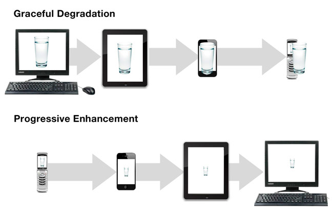
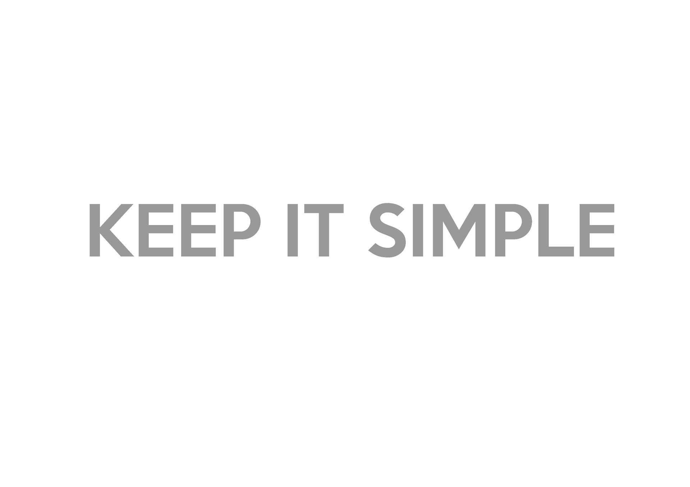

Your browser doesn't support the features required by impress.js, so you are presented with a simplified version of this presentation.
For the best experience please use the latest Chrome, Safari or Firefox browser.
Contents
- What is RWD?
- Why RWD?
- Alternatives
- How to achieve RW?
- Out of Box
- Final words
What is RWD?
- Responsive Web design - RWD
- Web design approach aimed at crafting sites to provide an optimal viewing experience
- Easy reading and navigation with a minimum of resizing, panning, and scrolling
- Wide range of devices (from mobile phones to desktop computer monitors)
Accessibility
Usability
Adaptability

Why RWD?

How can we achieve it?
- Viewport
- Media Queries
- Javascript { Resize }

Viewport
- The viewport is the part of the webpage that the user can currently see.
- The scrollbars move the viewport to show other parts of the page.
-
<meta name="viewport" content="width=device-width,
initial-scale=1.0, maximum-scale=1.0, user-scalable=no" >
Explanation
-
What width?
Understanding the Query
<link rel='stylesheet' media='all' href='normal.css' >
<link rel='stylesheet' media='screen and (min-width: 701px)'
href='medium.css' >
@media screen and (-webkit-device-pixel-ratio: 1.5), screen and
(resolution: 144dpi)
Mobile First Approach
What is this?

Bootstrap Walkthrough

And Finally..

Questions?
 to navigate.
to navigate.